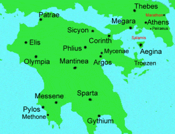

Quintus can be found at qcurtius.com. He is the author of the books On Duties, Thirty Seven, Sallust: The Conspiracy Of Catiline And The War Of Jugurtha, and other books. His work has been reviewed at Taki's Magazine. He can be followed on Twitter


With the proper motivation and preparation, small numbers of men can do great things. Numeric limitation is but one part of the equation. This fact will be illustrated by a story that appears in Cornelius Nepos’s brief biography of a Theban commander named Pelopidas.
In 382 B.C. the Spartan commander Phoebidas took possession of a Theban stronghold called the Cadmea. The Spartans were actually invited to do so by a political faction in Thebes that wanted to gain leverage over its opponents; bringing in a foreign military force seemed an expedient way to accomplish this goal. Phoebidas was happy to oblige; generals welcome opportunities to occupy forts. But the Spartan government had not authorized him to do this and, when they discovered he had exceeded his commission, stripped him of his command. They did not, however, return the fortress of the Cadmea to Thebes; in fact, they accelerated their efforts to set up a Theban puppet government.

The reason for this was that Sparta had begun to see Thebes as its future rival. Now that Athens had been brought under Spartan control in the Peloponnesian War, Sparta faced no other serious rivals in the Greek-speaking world. So Sparta stacked the Theban government with sympathizers and tools that would do its bidding. Those Thebans who were unwilling to align themselves with the new order of things were either exiled or assassinated. One of the exiled men was Pelopidas; and he, along with many others, relocated to Athens and began to plan a way to free Thebes from Spartan domination.
They kept communication with sympathetic Thebans back home using a variety of means. When the time for action came, they made their move. The day they chose was a feast day called the Festival of the Aphrodisia; it was a day when the local magistrates were to meet at a large banquet. Apparently Pelopidas had only about twelve men with him; yet, according to Nepos, “never has so shaky a start produced such a complete overturning of so much power.” But under the right circumstances, even very small numbers of men can set in motion a chain of events that can reshape history. Arrogant, bullying powers that seem to be invincible may, in fact, be more vulnerable than they appear. Much of power rests on perception; and when the myth is shattered, so is the power.
Pelopidas knew that his first task was to reach Thebes itself. So he and his dozen men left Athens in disguise; to move freely through the Greek countryside, they pretended they were domestic hunters. They dressed as country-dwellers brought hunting dogs, nets, and other equipment of this sort. When they reached Thebes they hid in the house of a sympathizer named Charon.
It was not long before news of the return of Pelopidas circulated around the city. This information even reached the ears of the magistrates who ran the Spartan collaborationist government; but since they were thinking more of preparing for the upcoming festival, they gave the report little notice. Arrogant and confident in their perceived security, they took no action to search for Pelopidas and have him arrested. Even more amazingly, they were provided written intelligence that betrayed the details of Pelopidas’s plans to overthrow the puppet regime.
We are told that the chief magistrate—an arrogant fool named Archias—was, while absorbed in his banquet, handed a sealed letter that contained the details of Pelopidas’s plot. But he took no action; he did not even condescend to read the letter. “I will put off this important issue until tomorrow (In crastinum differo res severas),” he said. He then stuffed the letter into his tunic and continued with his revelry. His blithe dismissal of the approaching danger is incredible, but nevertheless attested to by the facts.
Archias’s lack of action proved to be a fatal mistake. For Pelopidas’s coup was slated to begin that very night; he had picked a festival day on the assumption that the magistrates would have their guards lowered at that time. During the night, Archias and all his associates were seized and put to death. A signal was then given for a general uprising to take place across the city; taken off guard, the Spartan garrison was disarmed and ejected from Thebes. Once this had been accomplished, Pelopidas and his men took their revenge on those who had sold out their city to the foreigners: some were exiled, and others were executed.
This is the story as told by the Latin historian Cornelius Nepos. Under the right circumstances, small groups of dedicated men can become the vanguard for momentous change. Paucity in numbers can never serve as a crutch for inaction.